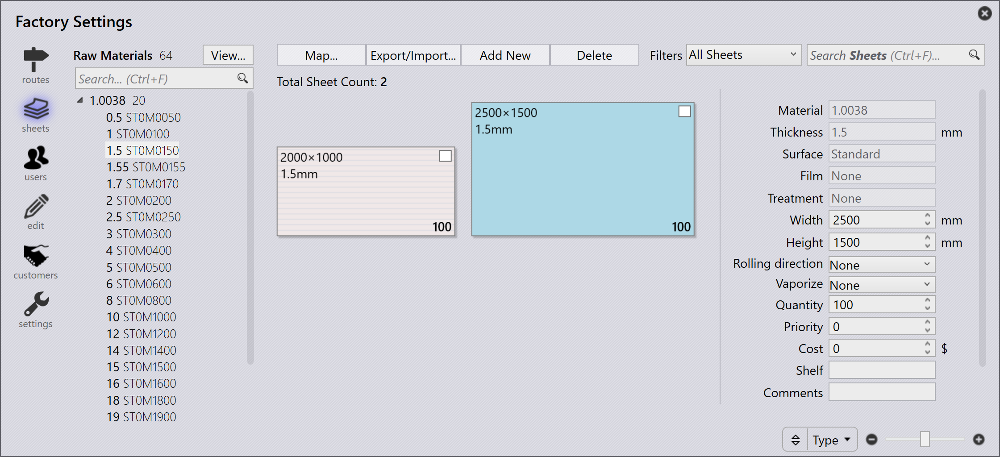

Προσθήκη νέου υλικού και μεταλλικής πλάκας
Η διαχείριση μεταλλικών πλακών είναι προσβάσιμη κάνοντας κλικ στο εικονίδιο Factory και επιλέγοντας sheets. Αυτό παρέχει μια επισκόπηση των υλικών που έχουν ρυθμιστεί. Επιλέγοντας οποιοδήποτε υλικό που παρατίθεται στα αριστερά, εμφανίζονται οι διαθέσιμες μεταλλικές πλάκες, τα πάχη, τα μεγέθη και οι ποσότητες.
Για να προσθέσετε ένα νέο υλικό, κάντε κλικ στο Add new → New Material… από τη σελίδα sheets στο factory.

Εισαγάγετε τις παραμέτρους Material, Raw Material, Thickness και τις παραμέτρους Υλικού. Κάντε κλικ στο OK.

Προβολή υλικού
Η επιλογή View… στο factory → Sheets διαθέτει τις ακόλουθες επιλογές:
-
Expand All: Αναπτύσσει όλες τις κατηγορίες υλικών.
-
Collapse All: Συμπτύσσει όλες τις κατηγορίες υλικών.
-
Show All Materials: Παραθέτει όλες τις πρώτες ύλες ανεξάρτητα από το απόθεμα μεταλλικών πλακών.
-
Show Inventory Materials: Παραθέτει μόνο τις πρώτες ύλες που έχουν απόθεμα μεταλλικών πλακών.
| Το πάχος Πρώτης Ύλης που εμφανίζεται με έντονη γραφή αντιπροσωπεύει τη διαθεσιμότητα μεταλλικών πλακών. |
Προσθήκη μεταλλικής πλάκας
Για να προσθέσετε μια νέα μεταλλική πλάκα, κάντε κλικ στο Add new → New Sheet από τη σελίδα Sheets στο factory. Τροποποιήστε τις παραμέτρους της μεταλλικής πλάκας.


-
Search Sheets (Ctrl + F)…: Φιλτράρει τις μεταλλικές πλάκες με βάση το μέγεθος, την κόκκωση, τα σχόλια, τον αριθμό θερμότητας, το υπόλειμμα και την εξάχνωση.
-
Ρυθμιστικό (+ / –): Ρυθμίζει το επίπεδο ζουμ της προεπισκόπησης μεταλλικής πλάκας.
-
Filter by: Ελέγχει την προεπισκόπηση μεταλλικής πλάκας με βάση την επιλεγμένη επιλογή (Width, Height, Area, Quantity, Grain, ή Type).
|
Η επεξεργασία ή η διαγραφή ενός υλικού ή μιας μεταλλικής πλάκας μπορεί να γίνει μόνο πριν αντιστοιχιστεί ένα εξάρτημα σε αυτό το υλικό ή τοποθετηθεί μια διάταξη σε αυτή τη μεταλλική πλάκα. Η αλλαγή του ονόματος του υλικού δεν είναι δυνατή σε αυτό το στάδιο. Επομένως, πρέπει να δημιουργηθεί ένα νέο υλικό. |